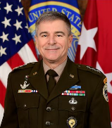

Command Structure: Commander -> Deputy Commander (Colonel) -> Data Science and AI Commander
Members are 18-21 years of age and are trained while in high school
Counts for required military service
Lots of members go in and out of service
Known Commanders:
Brigadier General Yoel Ben-Porat (1970s)
Rueven Yeredor (1980s)
Lior Div (unknown period)
Aharon Ze'evi-Farkash (unknown period)
Brigadier General Nadav Zafrir (unknown period)
Brigadier General Yair Cohen (2001 - 2005)
Brigadier General Hanan Gefen (succeeding Cohen)
Brigadier General "A" (anonymous, mid-2010s)
Brigadier General Asaf Kochan (unknown period)
Brigadier General Yossi Sariel (2021 or earlier - 2024)
Highlighted Generals:
Yossi Sariel
Served from 2021 or earlier to 2024
Resigned in Sept 2024 because he felt he failed his people over the October 7 Hamas attack
Identity leaked after publishing book about AI
Currently searching for his replacement
Born 1978
Nadav Zafrir
Since leaving service, has founded Team8 (which advises Fortune 500 companies)
Born in Kiryat Anayim, Israel
Established Israel Defense Force's Cyber Command
Potential Phone: +(97)273-331-8066
Summarize:
Cyber-Skills:
Malware Development
Created Stuxnet, a malicious piece of code that destroyed a significant portion of Iran's centrifuges for their uranium enrichment program
Highly sophisticated malware
Spreads over networks and over air gapped systems through USB sticks
Also created Flame, Gauss, and Duqu malware
Signal Intelligence (SIGINT) and Surveillance
Monitors and collects military intelligence-related information from tv, radio, newspapers, and the internet
One of the foremost technical intelligence agencies in the world
Able to monitor phone calls, emails, and other communications
Operates one of the largest bases in the world
Monitors communications throughout the Middle East, Europe, Asia, Africa, and tracks ships
Cyber Espionage and Reconnaissance
Flame, Gauss, Duqu all created for espionage purposes
Flame
precursor to Stuxnet
went to great lengths to avoid detection
designed to allow attackers to steal information or install more malware over Bluetooth
Gauss
designed to steal files and gather passwords
targeted bank credentials
passed from computer to computer via USB stick
sends data to C2 server
Duqu
designed to steal information about industrial control systems
Industrial Control System Exploitation
Targets industrial control systems and supervisory control and data acquisition systems
Goal is to disrupt energy, water, manufacturing, and nuclear processes
Accesses these systems through zero-day exploits, gaining remote control, and implementing anti-detection techniques
AI and Machine Learning
Uses AI and ML to analyze data quickly, identify patterns in vast datasets, and develop adaptive responses in cyber operations
Able to rapidly scan and map complex networks
ML allows malware to adapt to changes in a target's defense mechanisms
Attack:
Stuxnet Malware Attack
Known for allegedly having a hand in Stuxnet malware
Worked with the US's The Equation Group
Also associated with the Flame, Duqu, and Gauss viruses (all used for spying and spread via USB)
Target Iran's nuclear program
Discovered in June 2010
500 kb computer worm
Infected at least 14 industrial sites in Iran (most specifically a uranium-enrichment plant)
Able to spread on its own over computer network
First worm known to attack supervisory control and data acquisition (SCADA) systems
Intended to derail/delay Iranian nuclear weapon program
Objective was to stealthily manipulate the speed of the sensitive enrichment centrifuges (to cause attrition rather than blatant destruction)
Infected over 200,000 machines in 14 Iranian facilities and reportedly ruined up to 10% of the 9000 centrifuges in Natanz (where the facilities are located)
How it Works:
Detect and Track:
Malware Detection:
IOC Scanning - Use tools to identify known malware signatures across systems and interfaces
Stuxnet, Duqu, Flame, Gauss
Analyze suspicious files in sandboxes to detect Unit 8200's malware behavior, mainly targeting SCADA or ICS
Look for unusual network activity and privilege escalation
Tracking Unit 8200:
Use Open-Source Intelligence resources to monitor for potential activity attributable to Unit 8200
Especially monitor energy, nuclear, water, and other critical infrastructures in the Middle East
These sectors may reveal early signs of Unit 8200 activity
Threat Group 2:
US Cyber Command (USCYBERCOM)
Purpose: USCYBERCOM specializes in offensive cyber operations
Aliases: USCC, Cyber National Mission Force (CNMF)
Known Members: General Paul Nakasone (Commander), Major General Joe
Hartman, Lieutenant General Timothy Haugh
Comprised of several different subgroups as shown below:
Leadership:
Commander Gen. Timothy D. Haugh, USAF
Workplace: Fort George G. Meade, Maryland, United States
Last Known Address: 8414 Stonehouse Rd, Frederick, Maryland
21702
Possible Phone Numbers: (407) 217-2557, (202) 288-1571
Age: 55
LTG William J. Hartman, USA

Workplace: Fort George G. Meade, Maryland, United States
Social engineering and phishing for initial access
Notable Attack:
Operation Glowing Symphony (2016) targeted ISIS's digital
capabilities, neutralizing their communication channels
Disruption of ISIS's Communication Channels: ISIS was heavily
reliant on social media platforms, encrypted messaging apps, and
websites
Motivation: By erasing ISIS's online footprint, the US aimed to
reduce the group's influence, recruitment success, and operational
cohesion
Motivation: Shows the prowess of the USA's cyber abilities to
dissuade further trouble
Detect and Track:
Detection
Detection can involve monitoring for USCYBERCOM's distinctive use of
advanced encryption and exploitation techniques in network traffic.
Behavioral Analytic: USCYBERCOM often employs advanced, covert
techniques to access and infiltrate networks without detection.
Threat Intelligence Integration: Collaborating with
organizations like NATO CCDCOE, CISA, and other NATO-aligned cyber
defense organizations.
Track
Threat Actor Profiling: Regularly update profiles on USCYBERCOM’s
attack methods, operational targets, and known infrastructure.
Honeypots and Deception Technologies:Deploy honeypots tailored to
USCYBERCOM’s typical targets to attract and study their operations.
THREAT GROUP 3
NSA's Tailored Access Operations (TAO)
Tracked Group Names: Equation Group, EQGRP, "Crown creator of espionage"
Leadership:
General Timothy D. Haugh: Commander of US Cyber Command, Director of National Security Agency/Chief of Central Security Service
Born January 11, 1969
Workplace: National Security Agency headquarters at Fort George G. Meade, Maryland
Wendy Noble: Deputy Director, Senior Civilian Leader & Chief Operating Officer of National Security Agency
Likely born early to mid 1960s
Workplace: National Security Agency headquarters at Fort George G. Meade, Maryland
Cyber Skills/Specializations:
Network Infiltration: TAO excels at exploiting routers, switches, and firewalls from multiple vendors to gain access to entire networks rather than individual devices.
Zero-Day Exploit Development: The unit maintains a comprehensive list of top-secret zero-day exploits, allowing them to compromise computer networks to gather information, disable systems, or destroy data.
Hardware Interception: TAO has the ability to intercept and modify hardware shipments, inserting surveillance tools before devices reach their intended recipients.
Malware Deployment: The group specializes in creating and deploying sophisticated malware for intelligence gathering and system manipulation.
Quantum Attacks: TAO's QUANTUM program enables man-in-the-middle attacks that can monitor and manipulate encrypted communications.
Threat to Iran - Advanced capabilities, focus on foreign targets, attribution to successful cyber attacks
Notable Attack:
The Duqu Attack
Description: A sophisticated malware that is closely related to the Stuxnet worm was discovered in 2011 to have targeted Iran's nuclear facilities.
Attack Characteristics:
Duqu exploited zero-day vulnerabilities in Microsoft Windows systems.
It used stolen digital certificates to appear legitimate.
The malware had a modular structure, allowing for flexible deployment of different payloads.
Duqu utilized sophisticated persistence mechanisms and command-and-control infrastructure.
Threat Actors' Motivations:
Intelligence Gathering: Duqu was designed as an information-stealing malware, aimed at gathering intelligence on Iran's nuclear program.
Espionage: The malware allowed the attackers to spy on and monitor Iranian nuclear facilities and related organizations.
Preparation for Future Attacks: By collecting sensitive information, Duqu laid the groundwork for potential future cyber or physical attacks on Iran's nuclear infrastructure.
Detect and Track:
Detection
Use an IDS to detect unusual traffic in the network.
TAO often uses encrypted, covert channels for command and control traffic.
An IDS can also be programmed to recognize TAO-related malware signatures (e.g., Stuxnet).
Monitor for the use of fake IP addresses.
Use an endpoint detection and response solution due to TAO’s affinity for zero-day exploits.
Track
Use OSINT monitoring to track potential TAO activity in the area.
Create honeypots to detect TAO’s specific targeting behaviors.
Log Analysis:
Analyze the network to track unauthorized access attempts, data transfer spikes, or traffic indicative of C2 communication.
THREAT GROUP 4
Equation Group
Tracked Group Names: EQGRP, G0020, Tilded Team
Description - Widely considered to be the most advanced APT in developing malware, such as Duqu 2.0 (2019).
Cyber Skills/Specializations:
Has an arsenal of 0-day cyber weapons and exploits.
Develops worms and wipers.
Orchestrates DDos attacks.
Develops malware that possess an extreme level of persistence that helps to survive disk formatting and OS reinstallation.
Combines classic spying methods to deliver malware for cyber-espionage.
Notable Attack:
US-Linked Cyberattack on Suspected Iranian Spy Ship
Confirmed Perpetrator: United States National Security Council
Other Possible Perpetrators: Equation Group, ProjectSauron & Longhorn
Attack Characteristics:
A cyber attack was done on the Iranian MV Behshad ship (a suspected Iranian spy ship).
This ship provided Houthi pirates with information about maritime cargo ships.
German Experts claimed the IRGC has sent experts to Yemen to support Houthi operations.
This attack was on multiple fronts including cyber and strategic military strikes.
Threat Actors' Motivations:
This attack was orchestrated as a response to the 3 American soldiers killed on Jan 28th, 2024 in Yemen.
Detect and Track:
Detection
Equation Group
Use DPI or deep packet inspection to analyze network traffic for encrypted traffic that matches Equation’s MO.
This includes persistent malware like Duqu 2.0, backdoors, and especially zero-day exploits targeting Linux.
Search for malware that survives formatting and OS reinstallation.
Project Sauron
Mainly known for cyber espionage, so focus on monitoring network traffic rather than malware types.
Track AIS data for signs of monitoring and monitor encrypted channels disguised as normal traffic.
Longhorn (APT-C-39)
Look for legacy malware in a ship’s navigation systems.
Use security information and event management to identify any DDoS or tampering activity.
Track
Check compromised systems for unique malware attributes.
Track each group’s regional activity.
Match detected patterns with known tactics of each group for better tracking.
Malware signatures, encryption, and persistence methods.